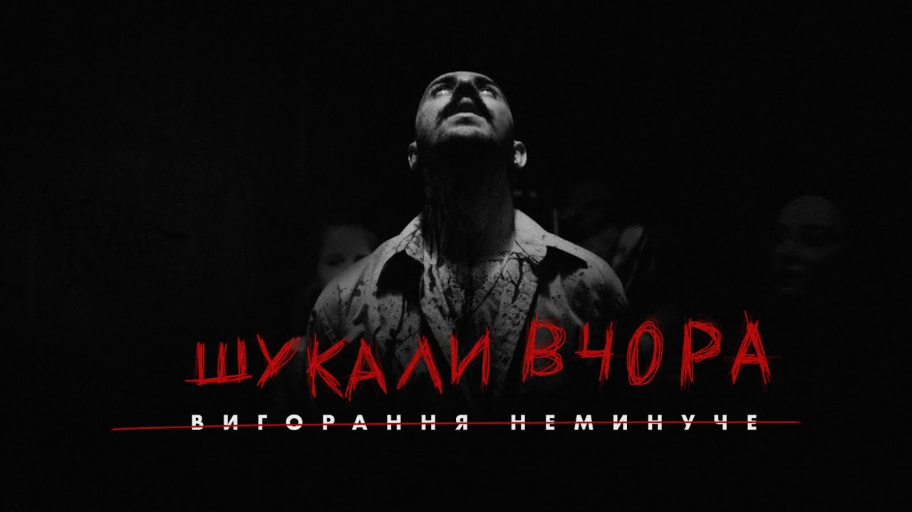

“Writing music is my refuge. I am so abstract. No matter what kind of music I write ”
― OTOY
The most popular
 OTOY - Шукали вчораOTOY
Ukrainian hip-hop and rap artist, musician and songwriter.
OTOY became one of the nominees for the titles "Artist of the Year"
and "Breakthrough of the Year"
according to the rap.ua portal, is a nominee for the Jager Music Awards
EVERYTHING ABOUT MUSIC